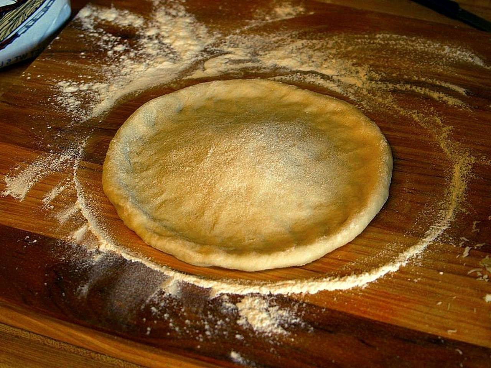

Pizza Dough
Home

Designed By Pixabay
Description
Pizza dough recipes are always too hard! Let's simplify it.
Ingredients
- 2 cups of flour
- 1 packet of instant yeast
- 1 1/2 teaspoons sugar
- 3/4 salt
- 1/4 teaspoon garlic powder
- 2 Tablespoons olive oil
- 3/4 cup warm water
Steps
- Mix 1 cup of flour, yeast, sugar, salt, and garlic powder.
- Stir in olive oil and warm water.
- Slowly add rest of flour until the dough forms a ball (should be sticky).
- Brush another bowl with olive oil.
- Put a small amount of flour on both hands and for the dough into a ball.
Transfer to the oiled bowl and roll around until covered.
- Set aside for 30mins (dough should double in size).
- Preheat oven to 425F.
- Cover a surface in flour and transfer dough to surface. Knead until smooth.
- Roll out dough into one large pizza (or multiple small ones).
- Place dough on pizza stone.
- Cover in desired sauce and toppings.
- Bake for 14 mins.